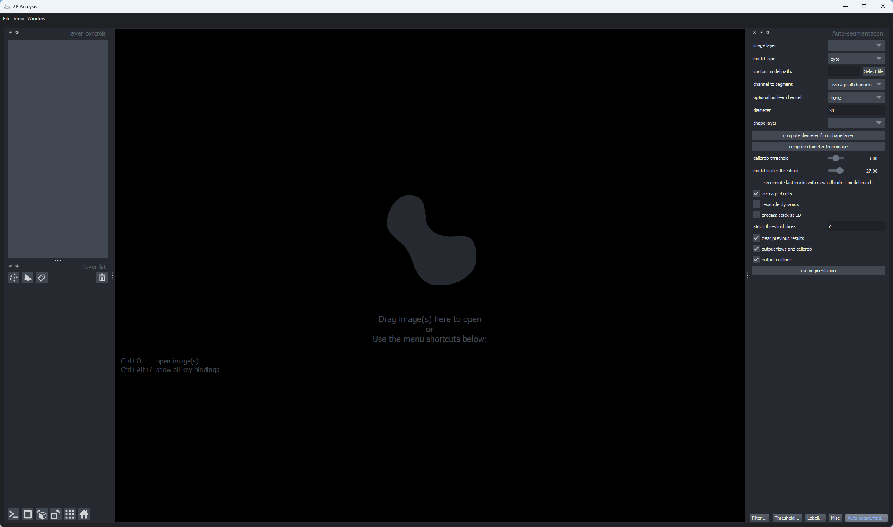
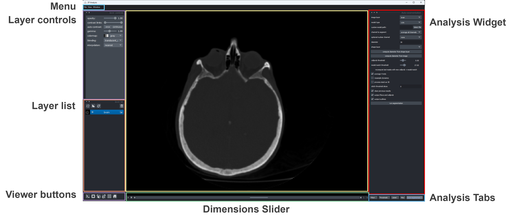
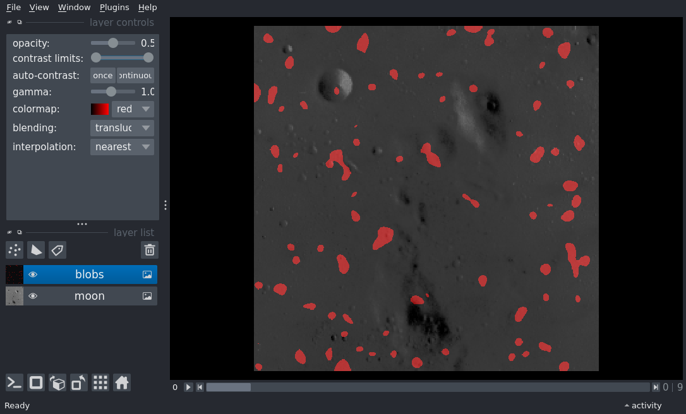
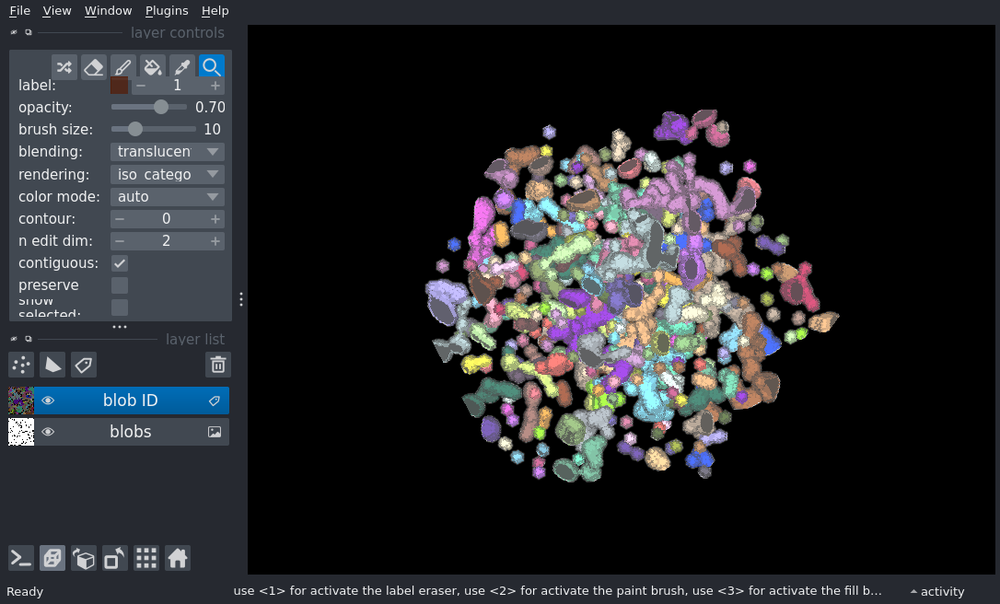

Quickstart¶
Welcome to the getting started with the Root Viewer tutorial!
This tutorial assumes you have already installed the Root Viewer. For help with installation see the installation tutorial.
The Root Viewer is built ontop of napari, and thus anytrhing Napari can do so can the Root-Viewer. Much of this tutorial is also based on the amazing Napari tutorials.
This tutorial will teach you all the different ways to launch and use the Root Viewer. By the end of the tutorial you should be able to launch the viewer and view all the images you desire!
Launching the Root Viewer¶
There are two ways to launch the viewer:
command line
python script
Command line usage¶
To launch the viewer from the command line simply run
root-viewer
This command will launch an empty viewer:
Python script usage¶
To launch the viewer from a python script, inside your script you should import root-viewer, and then create the Viewer by adding some data.
For example, to add an image and some points inside your script you should include:
import root-viewer
# create a Viewer and add an image here
viewer = root-viewer.view_image(my_image_data)
# custom code to add data here
viewer.add_points(my_points_data)
# start the event loop and show the viewer
root-viewer.run()
Both the view_image and the add_image methods accept any numpy-array like object as an input, including n-dimensional arrays. For more information on adding images to the viewer see the image layer guide (comming soon). Now we will continue exploring the rest of the viewer.
Layout of the viewer¶
The viewer is organized into a few key areas:
Main canvas¶
The main canvas is in the center of the viewer and contains the visual display of the data passed in, including images, point, shapes, and our other supported data types. Under the hood the canvas is a vispy.scene.SceneCanvas object which has built-in support for features such as zooming and panning. As vispy uses OpenGL and your graphics card, panning and zooming are highly performant. You can also return to the original zoom level by clicking the home button in the viewer buttons panel.
The viewer is organized into a few key areas:

Layer list¶
One of the basic napari objects are layers. There are different layer types for Image, Points, Shapes, and other basic data types. They can be added to the viewer either programmatically or through the GUI. Once added they start to populate the layer list located on the bottom lefthand side of the main canvas.
The layer list contains one widget for each of the layers that have been added to the viewer and includes a thumbnail which shows a miniaturized version of the currently viewed data, a name that is an editable text box, visibility button that can be toggled on or off to show or hide the layer, and an icon for the layer type.
Adding the following three image layers three-layer widgets to the layer list as follows:
viewer = root_viewer.Viewer()
viewer.add_image(data.astronaut(), name='astronaut')
viewer.add_image(data.moon(), name='moon')
viewer.add_image(data.camera(), name='camera')
Note that we’ve also also named each of the layers using the name keyword argument in add_image, and that name has appeared as a string in the layer widget. The layer name is coerced into being unique so that it can be used to index into the LayerList.
You can select layers, causing them to become outlined, by clicking on their layer widget. Multiple layers can be simultaneously selected using either shift or command click to select either all the layers in between clicked-on layers or just the clicked-on layers respectively.
You can rearrange the order of the layers by dragging them, including dragging multiple layers at the same time.
The Viewer object also contains our LayerList object that allows you to access the data of all the layers by
Dimension sliders¶
One of the main strengths of napari, and why we chose to use it, is that from the beginning it was built to handle n-dimensional data. While much consumer photography is 2D and RGB, scientific image data can often be volumetric (i.e. 3D), volumetric timeseries (i.e. 4D), or even higher dimensional. napari places no limits on the dimensionality of its input data for all its layer types.
Adding data with a dimensionality greater than 2D will cause dimension sliders to appear directly underneath the main canvas and above the status bar. As many sliders as needed will appear to ensure the data can be fully browsed. For example, a 3D dataset needs one slider, a 4D dataset needs two sliders, and so on. The widths of the scroll bars of the dimension sliders are directly related to how many slices are in each dimension.
It is also possible to mix data of different shapes and dimensionality in different layers. If a 2D and 4D dataset are both added to the viewer then the sliders will only affect the 4D dataset and the 2D dataset will be remain the same. Effectively, the two datasets are broadcast together using NumPy broadcasting rules.
For example, here we are visualizing 2D and 3D datasets to the in the viewer:
In order to update the current position of the slider, hold and drag the slider or press the play button on the left-hand side.
Viewer buttons¶
Underneath the layers list there is a row of buttons that includes the Console button that will show or hide our console that allows you to interact with a python kernel. Inside the console you can access the viewer using the viewer argument.
When the console button is clicked, the console will appear at the bottom of the viewer as follows:

We then have a button that switches between 2D and 3D rendering:

… clicking on the 3D button
and rotating the camera view with the mouse gives something like the following view:
Next to the 2D / 3D button is a button to roll the dimensions that are currently being displayed in the viewer - for example if you have a ZYX volume and are looking at the YX slice this will then show you the ZY slice.
After that is a button that transposes the displayed dimensions.
Finally, there is the home button that will reset the camera state to its initial values.
Next steps¶
Hopefully, this tutorial has given you an overview of the functionality available in the viewer, including the LayerList and some of the different layer types. To learn more about the different layer types that we support, check out thge guides on using layers.